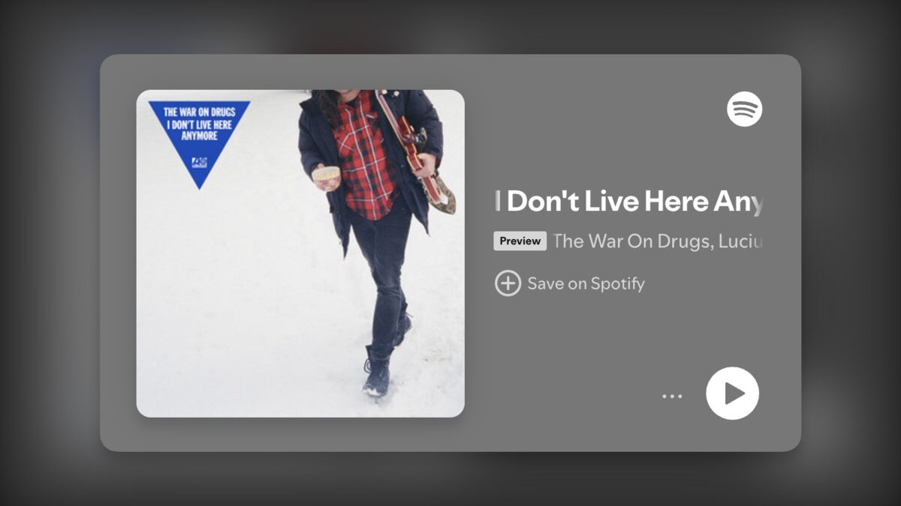

I Don’t Live Here Anymore
A few years ago — eight, to be exact — I started building a web application to use with some friends. Though I didn’t know it at the time, this app would come to be called Music League. It would be used by hundreds of thousands of people at one time or another across 6 continents. We never could get Antarctica…
Sounds great, doesn't it?
For the first leg of the journey, it was. We weren't making money, but I was having fun and learning new technical skills that frequently benefitted me elsewhere — I did not, as they say, “quit my day job”. In later legs of the journey, “we” would come to include myself, two business partners, the Limited Liability Company (LLC) that we would form, a designer, an investor related to one business partner, and a convertible note holder.
I remember the first time I discovered that someone who I didn't know was using the app. I couldn't believe it! Over the years, countless people would find new music through this app that The Verge called “an antidote to the music streaming algorithm”. The app really took off at the beginning of the COVID-19 pandemic as people were searching for a way to connect with each other virtually. So many people reached out to tell me that it was a bright spot for them in an otherwise terrible time. After the pandemic, I would go on to meet multiple fans of the app in real life at concerts, festivals, conferences and the like. It became somewhat normal to have someone bring up the app in conversation, completely unaware that I had created it. This was the closest thing I had ever experienced to 15 minutes of fame.
At some point along the way though, it didn't feel so great anymore. I looked up and realized that I still wasn't making money, I was no longer having fun, and the lessons that I was learning had become hard-fought and painful ones riddled with regret, stress and anxiety. They would certainly benefit me later, just like the technical lessons that I had learned early on; however, I was having panic attacks any time I had to interact with one particular business partner that I had reluctantly agreed to bring on years earlier. We tried to work out our differences but never could see eye-to-eye. It wasn't for lack of trying, pulling out all of the tools that I had gained from hours and hours of therapy. We fundamentally have different values and want different things in life and in business.
As of a few weeks ago, I no longer work on Music League. Oddly enough, the breakup process was so much less painful than I was expecting. I vividly remember sitting on the couch late one night and sending my resignation letter to the rest of the team. After sitting with the idea for the summer and having drafted my resignation email weeks ahead of time to see how it felt, I don't live here anymore. Fittingly, there was a soundtrack to my resignation. I hit send on the closing note. I’m reclaiming my time and energy to spend them on projects and with people who add to my life. I’m taking those hard-learned lessons and using them to make everything I do from here on out better. After all, those hard lessons and lived experiences are the ones that mean the most in the end.
– Nathan
